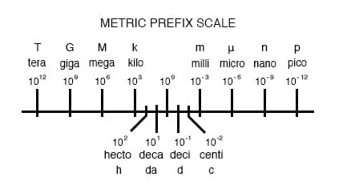

The metric system, besides being a collection of measurement units for all sorts of physical quantities, is structured around the concept of scientific notation. The primary difference is that the powers-of-ten are represented with alphabetical prefixes instead of by literal powers-of-ten.
The following number line shows some of the more common prefixes and their respective powers-of-ten:

Looking at this scale, we can see that 2.5 Gigabytes would mean 2.5 x 109 bytes, or 2.5 billion bytes. Likewise, 3.21 picoamps would mean 3.21 x 10-12 amps, or 3.21 1/trillionths of an amp.
Other metric prefixes exist to symbolize powers of ten for extremely small and extremely large multipliers. On the extremely small end of the spectrum, femto (f) = 10-15, atto (a) = 10-18, zepto (z) = 10-21, and yocto(y) = 10-24. On the extremely large end of the spectrum, Peta (P) = 1015, Exa (E) = 1018, Zetta (Z) = 1021, and Yotta (Y) = 1024.
Because the major prefixes in the metric system refer to powers of 10 that are multiples of 3 (from “kilo” on up, and from “milli” on down), metric notation differs from regular scientific notation in that the mantissa can be anywhere between 1 and 999, depending on which prefix is chosen.
For example, if a laboratory sample weighs 0.000267 grams, scientific notation and metric notation would express it differently:
2.67 x 10-4 grams (scientific notation)
267 µgrams (metric notation)
The same figure may also be expressed as 0.267 milligrams (0.267 mg), although it is usually more common to see the significant digits represented as a figure greater than 1.
In recent years a new style of metric notation for electric quantities has emerged which seeks to avoid the use of the decimal point. Since decimal points (”.”) are easily misread and/or “lost” due to poor print quality, quantities such as 4.7 k may be mistaken for 47 k.
The new notation replaces the decimal point with the metric prefix character, so that “4.7 k” is printed instead as “4k7”. Our last figure from the prior example, “0.267 m”, would be expressed in the new notation as “0m267”.
REVIEW: